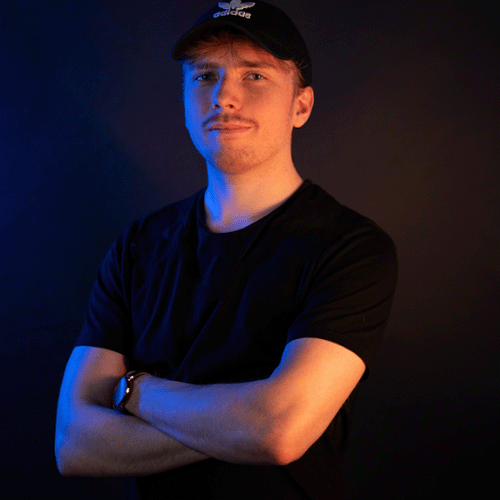
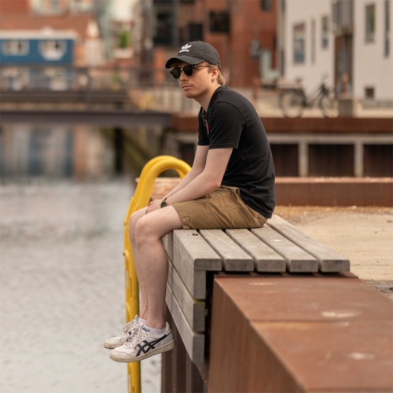
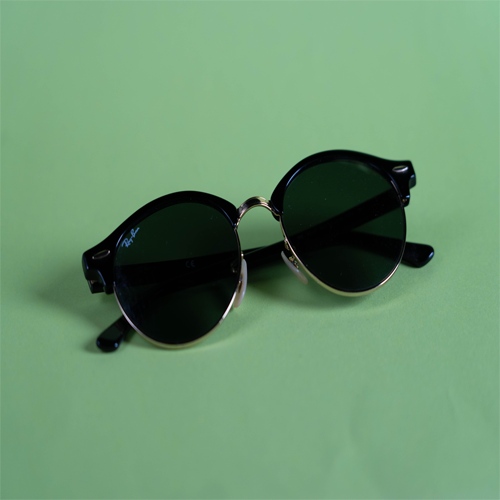

Foto dayWhile i was constructing this website, we were tasked to take a bunch of pictures, both portraits and product pictures. some pictures could be used for personal use and others, like the one below was used for my proces portfolio page. I used Adobe Lightroom classic to change the ligthting on the pictures. I also used Adobe Photoshop to remove the large print on my shirt on the picture to the right.
  